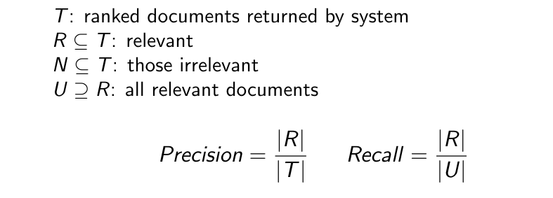

information retrieval and Q&A for AIs
We may want to train an AI to answer simple questions for us. In order to do that, we can use two main strategies:
- information retrieval: gather some documents and feed their text to the AI that will use them to answer
- Knowledge-base: build a DB that stores answers, and then allow the AI to query it in some manner.
Information retrieval
In order to feed the AI with only the most relevant files we have, we must rank them in order of importance. To do so we can use a scoring function. Most scoring function are based on the tf-idf paradigm also found in Word embedding . A popular scoring function is: since query words are likely to have a counting score of 1 and the value of is the same for all documents, we can rewrite the score as: a popular variation of this scoring function is the Okapi BM25. We can also compute the precision and recall values (Evaluation of a classifier for more context if needed) 
There can also be problems with synonymys. In order to deal with these cases, we can use embedded words to compute the scoring function.